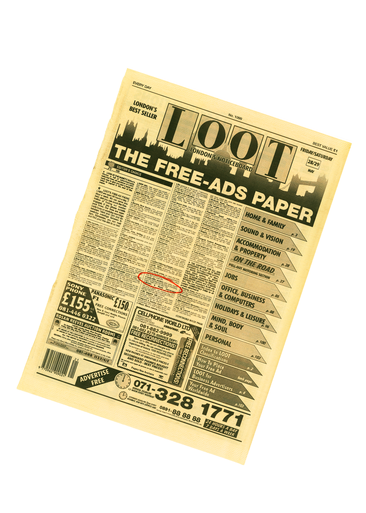
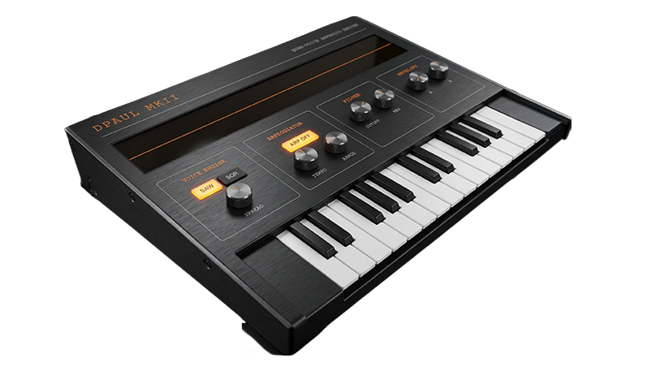
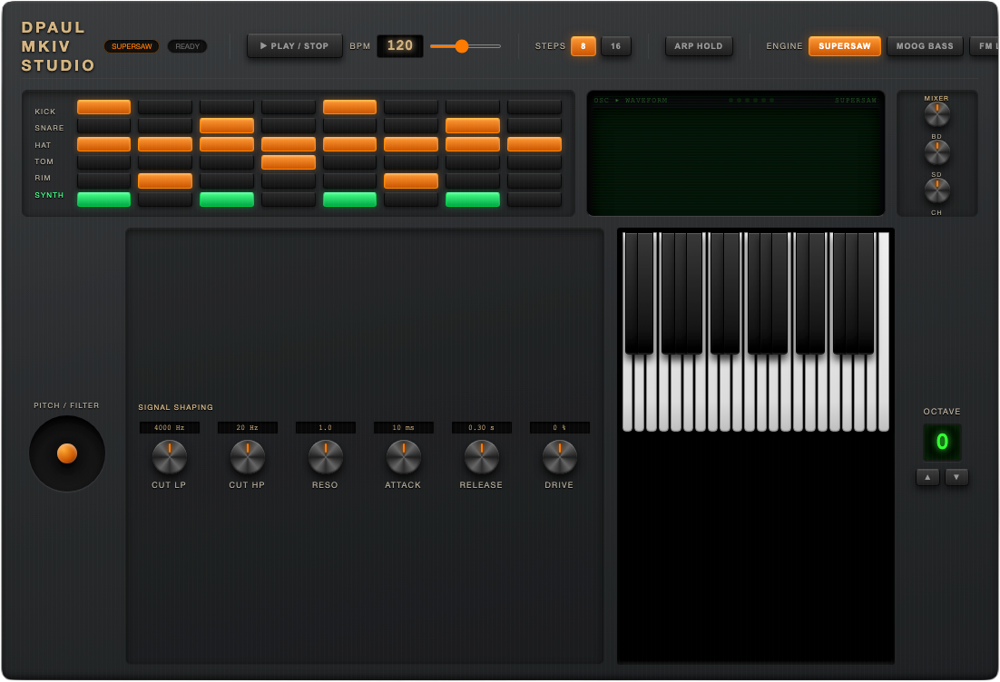
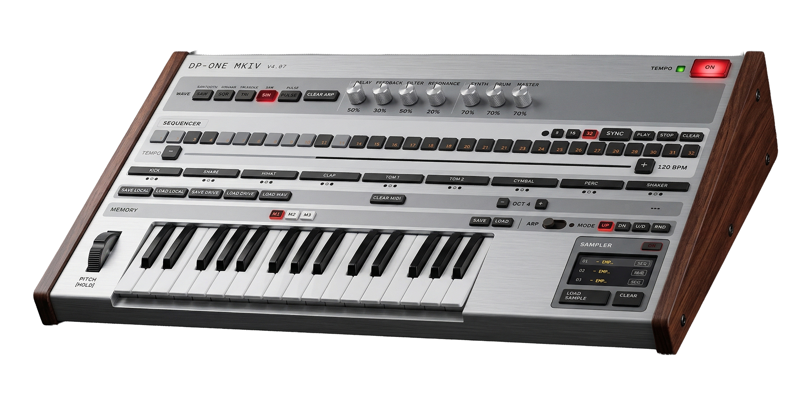

Thirty years of hardware. Then this happened.
Curiosity about how things work is what drives most of the interesting things in life. After years of playing with hardware synths, drum machines and music software, a question kept nagging — could something like this actually be built from scratch in a browser? What you'll find on this page is the answer to that question. It's a journey through six months of late nights, broken code, and the slow satisfaction of watching something come to life one feature at a time.
None of this started with code. It started with a page of small ads and a phone call in 1991.
The internet didn't exist — not for most people, anyway. If you wanted to buy something secondhand, you read the Loot — a weekly classified ads paper where buying something meant actually picking up the phone and speaking to a stranger. A Korg M1 appeared in the listings. I made the call, agreed a price, and arranged to meet the seller at Liverpool Street station.
One floor apart.
Found each other
through a newspaper ad."
The seller worked in London — and as we were sorting out the details over the phone, it slowly dawned on both of us that so did I. Right there at Liverpool Street, at County NatWest. Same building. One floor apart. Two people who'd never met, connected by a column of small print and a landline.
Around 300 pounds changed hands. The M1 came home with me. And that was the beginning of a long relationship with synthesisers — hardware first, then software, and eventually the question that led to everything on this page: could I actually build one from scratch?
Thirty years on, here's the answer.


None of this came from a course or a textbook. Knobs stopped responding. Keys triggered the wrong notes. The arpeggiator timing would drift. The whole thing would occasionally freeze mid-session. Every time something broke, there was a choice — start over, or figure out why.
The method that emerged was simple enough: copy the HTML into a reader, go through it line by line, find whatever was causing the problem. Search the terms that made no sense. Then go back to AI with something specific — "this section here — what's wrong with it?" That back-and-forth turned out to be the whole education.
Understanding code by fixing it is a perfectly valid way in. Problem first, knowledge second — the learning is a side effect of just wanting something to work. Which, it turns out, is how most useful skills get learned.
School wasn't a great experience — things at home were complicated, and getting out into the world and starting to earn felt more urgent than qualifications. Looking back, that pushed toward a different kind of learning: working things out on the job, adapting, picking up skills by actually needing them. Which is still exactly how it works.
Every journey starts somewhere. This one started with a single prompt and a question — can a working synth actually be built in a browser with no coding background? One oscillator, three waveforms, a basic filter, a two-octave keyboard. Barely anything. But it made sound, it responded to the keys, and that was enough to keep going. Everything else on this page grew from here.

MKI — 3D render from HTML UI screenshot
To play these synths, visit this site on a desktop or laptop.
A single note gets dull quickly. What makes a synth interesting is movement — sound that evolves, patterns that breathe. The MKII introduced four voices running at once, slightly detuned from each other to give that thick, wide quality hardware polysynths are known for. The arpeggiator came next: hold a chord and the synth cycles through the notes automatically, climbing octaves as it goes.
Try holding several keys at once with the arp running — it's one of those features that immediately makes you want to play rather than just test.

MKII PolyArp — 3D render from HTML UI screenshot
Something I learned early on — and had to learn the hard way — is recognising when AI is wrong. A generated design can look exactly like a synthesiser: professional layout, labelled controls, convincing colour scheme. And it can have absolutely no understanding of what a synthesiser actually needs to do.
The example here is a generated MKIV design. At a glance it's convincing. Look closer and it falls apart: a large empty panel with no function, a pitch/filter section with a single knob, mixer controls floating with no relationship to the signal chain, a keyboard awkwardly isolated in a corner. It's a picture of a synthesiser, not a synthesiser.
Catching this requires genuine understanding of what's being built — which controls belong together and why, what signal flow looks like, where a player's hands actually need to reach. That critical eye is what separates someone who uses AI from someone who works with it.

The MKIII is where the project changed shape. Up to this point it had been a keyboard instrument — something you played note by note. Adding a sequencer and drum machine turned it into something that could run on its own, generating rhythm and melody without anyone touching it. That shift in thinking is what pushed everything forward.
The MKIII introduced an 8-step sequencer with four independent rows — kick, snare, hi-hat, and a synth voice — each with its own pattern. Getting the Web Audio scheduler to stay tight at different tempos turned out to be one of the trickier problems in the whole project.
One experiment that came and went was a sampler. It worked, but adding files in advance felt clumsy — the whole point was something anyone could pick up and play immediately. The sampler came out. Knowing what to remove turned out to be as important as knowing what to add.
By the MKIV the keyboard expanded to 37 keys, a pitch wheel arrived for real-time expression, the arpeggiator gained a Hold mode, and the drum section expanded to six rows. The oscilloscope switched to a green phosphor display — because at a certain point the way something looks becomes part of what it's for.
One of the more visible changes was switching from black to silver. The silver MKIV became the reference point for the next phase: turning the HTML interface into something that looked like a real physical object.
Once the silver colour scheme was in place, the question became: what would this look like as a real instrument on a studio desk? A screenshot of the finished HTML interface was fed into an AI image generator — the start of a process that turned out to be considerably more involved than expected.
Early attempts were rough. One prompt produced a carbon fibre finish that came out looking exactly like a chessboard. Others got the proportions wrong or placed controls with no logic. The lettering was a persistent problem — labels would come out blurred, misspelled, or with letters missing entirely.
The approach that worked was using AI to construct the image prompt itself — asking it to generate a detailed description of a realistic hardware synthesiser based on the screenshot, with very specific instructions about material finish, lighting, and text accuracy. There's a stray element visible in the bottom-right corner — a reminder that the AI renders what the prompt suggests, not what makes sense for the instrument.

The MKIV in silver — generated from a screenshot of the working HTML interface.
Build it right.
After the MKIV the codebase had become a layered accumulation of fixes on top of fixes. Each problem had been solved in isolation, and it showed. Everything worked — but only just, and only because six months of patches were holding it together. At a certain point continuing to patch stops making sense. The right call was to go back to zero.
The MkV is a complete rebuild — started from a very basic single-voice synth and rebuilt one feature at a time, with nothing added until the previous thing was genuinely understood. The knowledge built up over those six months made all the difference: knowing exactly what to ask for, which architectural decisions would cause problems later, and which features were worth carrying across.
The rebuild took two to three days. The understanding that made it possible took six months.
Two different AI tools were used across different stages. Switching between them at key points — rather than committing to one throughout — produced noticeably better results. Different tools have different strengths, and knowing when to move between them is its own skill.
The MkV is also still in progress — and that's deliberate. The way this work tends to go is across several projects at once. Things get noted down, set aside, and returned to when the time feels right. It's a working method that suits the way ideas actually arrive — not in a straight line, but in waves.


Three synth engines, a seven-mode filter bank, LFO and envelope modulation, a joystick for pitch and filter expression, a full effects chain, and a 6-row sequencer running 8 or 16 steps. The skin and visual finish are still in progress. The sound came first.
The current beta adds a full I/O panel in the top-right corner — three new features available to test now:
- Audio SaveHit REC to start capturing, then SAVE to download as .webm — plays in any modern browser or VLC.
- MIDI ExportExports the full pattern as a .mid file — 5 tracks, drums on Ch10, all at current BPM.
- MIDI ImportOpens a file picker to load an existing .mid directly into the sequencer.

DP-ONE MkV — finished HTML interface · browser instrument
To play these synths, visit dpaul.studio on a desktop or laptop.
The Roland TB-303 is one of those machines that became famous by accident — designed as a practice tool for guitarists, it ended up defining an entire genre when people figured out what happened if you cranked the resonance and let the filter breathe. The Acid-Box is a dedicated bass synth built around that same character: focused, squelchy, and immediately recognisable.
It runs across two pages — the main sound-shaping panel and a secondary view with a mini keyboard for triggering notes. Fully MIDI compatible, so a hardware controller connects straight in. Custom skins are the next step.
- TypeMonophonic bass synth
- Character303-style filter / resonance
- Interface2-page layout
- KeyboardMini trigger keyboard (Page 2)
- MIDIFull MIDI input support
- PlatformBrowser — no install required

3D render generated from HTML UI screenshot
The browser instruments on this page didn't come from nowhere. They came from thirty years of living with hardware — buying, selling, patching, breaking, and learning through actual machines with actual knobs. The Korg M1 that started it all in 1991 was followed by a Triton, an E-mu Proteus, the ER-1 and EA-1, a MicroKorg, a Monologue, and a Roland FP-10 as a proper weighted keyboard. Each one left something behind — a workflow habit, an understanding of envelopes, a preference for how a filter should behave.
That accumulation of hardware knowledge is what made building software versions possible. You can't design a convincing filter section if you've never twisted a resonance knob into feedback on a real machine.

M1 · Triton · E-mu Proteus · ER-1 & EA-1 · MicroKorg · Microsampler · Monologue · Roland FP-10
The hardware collection has slimmed down over the years — partly practicality, partly a shift toward software. The current setup runs on an Apple Mac M2, with an M-Audio Air 192 audio interface feeding a pair of Yamaha HS5 studio monitors. An Arturia Minilab 3 handles physical controller duties.
On the software side: Arturia for analogue modelled instruments, Moog plugins for low-end weight, Korg software editions, Serum for wavetable work, and Splice for samples. The browser synths sit alongside all of that — a parallel track, not a replacement.